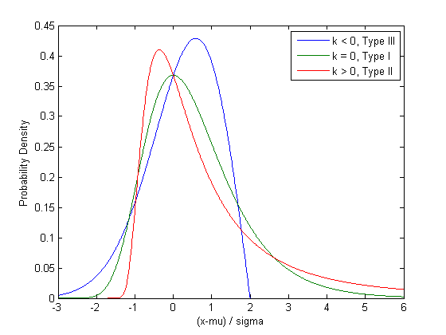
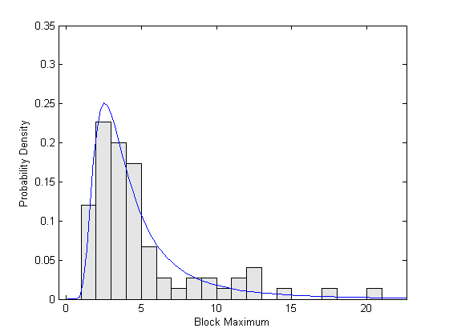
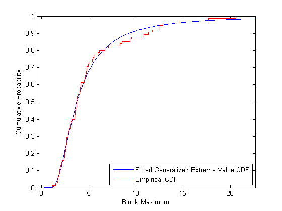
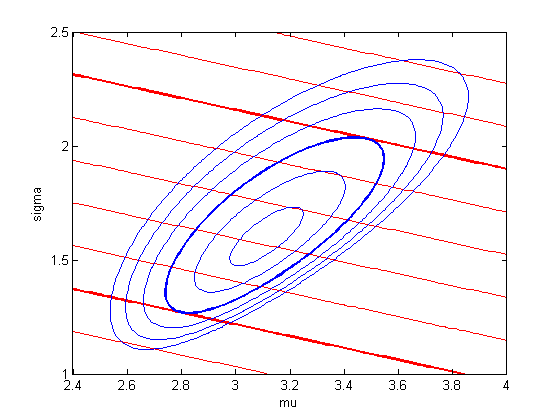
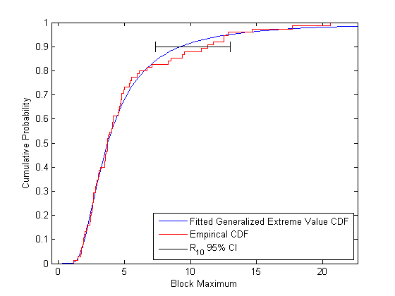
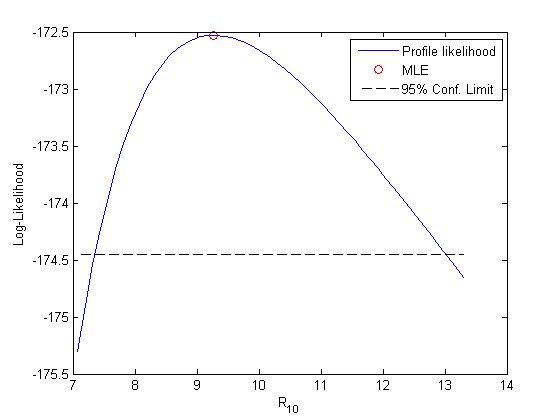

一般化極値分布によるデータのモデル化
極値理論は、測定のグループまたはブロックから最大 (または最小) 値をモデル化するために使用されます。3 種類の極値分布が一般的で、それぞれ、基になっている別々の種類の極限のケースです。たとえば、1 種の極値は、ブロック サイズが大きくなるに従って、正規分布データのブロックの最大 (または最小) の極限分布です。
この例では、これら 3 種類の極値分布を含む単一の分布を使用して、そのようなデータを近似する方法を示し、近似分布の分位数の尤度ベースの信頼区間を調べます。
目次
一般化極値分布
一般化極値 (GEV) 分布は、1 種、2 種、および 3 種の極値分布を 1 つのファミリーにまとめるので、可能な形状を連続的にとることができます。一般化極値分布は、位置パラメーターとスケールパラメーター (mu と sigma) および形状パラメーター (k) でパラメーター化されます。k < 0 の場合、GEV は 3 種の極値と同等です。k > 0 の場合、GEV は 2 種の極値と同等です。k が 0 に近づくような限界では、GEV は 1 種の極値になります。
x = linspace(-3,6,1000); plot(x,gevpdf(x,-.5,1,0),'-', x,gevpdf(x,0,1,0),'-', x,gevpdf(x,.5,1,0),'-'); xlabel('(x-mu) / sigma'); ylabel('Probability Density'); legend({'k < 0, Type III' 'k = 0, Type I' 'k > 0, Type II'});
k < 0 または k > 0 の場合、密度は、上限または下限 -(1/k) の確率 0 を持ちます。k が 0 に近づくような限界では、GEV は無限大です。このことは、1+k*(y-mu)/sigma の制約は正である必要があると示すことができます。
ブロック最大データのシミュレーション
GEV は、ブロック最大 (または最小) の極限分布として直接定義できます。したがって、1 つの確率分布から取り出された多数の乱数値を生成し、最大値をとった場合、その最大値の分布は、ほぼ GEV です。
結果の GEV 分布の形状パラメーター k は、オリジナルの分布によって決定されます。スチューデントの t 分布のように、多項式減衰する裾を持つ分布は、正の形状パラメーターを持ちます。正規分布のように、指数減衰する裾を持つ分布は、0 の形状パラメーターに相当します。ベータ分布のように、分布の裾が有限の場合は、負の形状パラメーターに相当します。
GEV の実際の応用例には、毎月の株の最大配当のモデル化などがあります。ここでは、自由度が 2 のスチューデントの t 分布から最大値 25 をとって、データをシミュレートします。シミュレートしたデータには、75 のランダムなブロック最大値が含まれます。
rand('state',0'); randn('state',0); y = max(trnd(2,25,75),[],1);
最尤による分布の近似
関数 gevfit は、最尤パラメーター推定、および (既定で) 95% の信頼区間を返します。
[paramEsts,paramCIs] = gevfit(y); kMLE = paramEsts(1) % Shape parameter sigmaMLE = paramEsts(2) % Scale parameter muMLE = paramEsts(3) % Location parameter
kMLE =
0.4423
sigmaMLE =
1.5969
muMLE =
3.1096
kCI = paramCIs(:,1) sigmaCI = paramCIs(:,2) muCI = paramCIs(:0.3)
kCI =
0.2249
0.6597
sigmaCI =
1.2574
2.0281
muCI =
2.6974
3.5218
k に対する 95% の信頼区間には、値 0 は含まれません。したがって、1 種の極値分布は、これらのデータに適したモデルではありません。シミュレーションの基になる分布は正規よりもずっと重い裾を持つので、このことは正しく、ブロック サイズが大きいので 2 種の極値分布が理論的に正しいモデルになります。
信頼区間の代わりに、パラメーター推測の漸近共分散行列の近似を計算し、それからパラメーターの標準誤差を抽出できます。
[nll,acov] = gevlike(paramEsts,y); paramSEs = sqrt(diag(acov))
paramSEs =
0.1109
0.1947
0.2103
近似の視覚的なチェック
近似の程度を視覚的に評価するために、近似確率密度関数 (PDF) と累積分布関数 (CDF) のプロットを見てみます。
GEV のサポートは、パラメーター値に依存します。この場合、k の推定値は正なので、近似分布は下限以下の 0 確率を持ちます。
lowerBnd = muMLE-sigmaMLE./kMLE;
まず、近似 GEV モデルの PDF で重ねて、データのスケーリングされたヒストグラムをプロットします。このヒストグラムは、PDF と比較できるように、バーの高さと幅の積が 1 になるようスケーリングされます。
ymax = 1.1*max(y); bins = floor(lowerBnd):ceil(ymax); h = bar(bins,histc(y,bins)/length(y),'histc'); set(h,'FaceColor',[.9 .9 .9]); ygrid = linspace(lowerBnd,ymax,100); line(ygrid,gevpdf(ygrid,kMLE,sigmaMLE,muMLE)); xlabel('Block Maximum'); ylabel('Probability Density'); xlim([lowerBnd ymax]);
経験累積分布関数と近似累積分布関数を重ねて、累積確率でデータの近似を比較することもできます。
[F,yi] = ecdf(y); plot(ygrid,gevcdf(ygrid,kMLE,sigmaMLE,muMLE),'-'); hold on; stairs(yi,F,'r'); hold off; xlabel('Block Maximum'); ylabel('Cumulative Probability'); legend('Fitted Generalized Extreme Value CDF','Empirical CDF','location','southeast'); xlim([lowerBnd ymax]);
モデルの分位数の推定
パラメーター推定はそれ自体が重要ですが、ブロック最大データの分析においては、近似 GEV モデルの分位数が対象となる量である場合があります。
たとえば、戻り値の水準 Rm は、m ブロックで一度だけ超過すると予期されているブロック最大値として定義されます。これは、(1-1/m) 番目の分位数です。最大尤度パラメーター推定を逆 CDF に代入して、m=10 の Rm を推定できます。
R10MLE = gevinv(1-1./10,kMLE,sigmaMLE,muMLE)
R10MLE =
9.2678
漸近的近似を使用して R10 の信頼限界を計算できますが、その結果は有効でないことがあります。代わりに、尤度ベースの方法を使用して信頼限界を計算します。この方法では、パラメーター推定の推定された共分散行列ベースの方法よりも精度の高い結果が得られる場合があります。
パラメーター mu、sigma、および k の値のセットを使用して、対数尤度を計算できます。たとえば、MLE は、GEV 対数尤度を最大化するパラメーター値です。パラメーター値が MLE から離れるに従って、通常、その対数尤度は最大値よりも大幅に小さくなります。これは、指定した臨界値よりも大きい対数尤度を生成するパラメーター値のセットではパラメーター空間の複雑な領域です。しかし、適切な臨界値の場合、これはモデル パラメーターの信頼領域です。領域には、"データに一致する" パラメーター値が含まれます。領域を決定する臨界値は、カイ二乗近似に基づきます。ここでは、95％ の信頼水準を使用します (実際には対数尤度の負を扱います)。
nllCritVal = gevlike([kMLE,sigmaMLE,muMLE],y) + .5*chi2inv(.95,1)
nllCritVal = 174.4483
mu、sigma、および k のいずれのセットに対しても R10 を計算できます。したがって、負の対数尤度が臨界値よりも大きいパラメーター空間の臨界領域内の最小の R10 値を見つけることができます。最小値は、R10 の下限尤度ベースの信頼限界です。
これは、これらのすべてのパラメーターの次元で視覚化することは困難ですが、実験として、形状パラメーター k を決定し、残りの 2 つのパラメーター (sigma と mu) でプロシージャがどのように動作するかを確認できます。
sigmaGrid = linspace(1, 2.5, 110); muGrid = linspace(2.4, 4); nllGrid = zeros(length(sigmaGrid),length(muGrid)); R10Grid = zeros(length(sigmaGrid),length(muGrid)); for i = 1:size(nllGrid,1) for j = 1:size(nllGrid,2) nllGrid(i,j) = gevlike([kMLE,sigmaGrid(i),muGrid(j)],y); R10Grid(i,j) = gevinv(1-1./10,kMLE,sigmaGrid(i),muGrid(j)); end end nllGrid(nllGrid>gevlike([kMLE,sigmaMLE,muMLE],y)+6) = NaN; contour(muGrid,sigmaGrid,R10Grid,6.252:.724:12.768,'LineColor','r'); hold on contour(muGrid,sigmaGrid,R10Grid,[7.7 11.32],'LineWidth',2,'LineColor','r'); contour(muGrid,sigmaGrid,nllGrid,[172.75 173.45:1:177.45],'LineColor','b'); contour(muGrid,sigmaGrid,nllGrid,[nllCritVal nllCritVal],'LineWidth',2,'LineColor','b'); hold off axis([2.4 4 1 2.5]); xlabel('mu'); ylabel('sigma');
青い等高線は、対数尤度表面を表し、青の太い等高線は臨界領域の境界です。赤い等高線は R10 の面を表します。右上が大きい値で、左下が小さい値です。k が固定値なので等高線は直線で、Rm は sigma と mu の線形関数です。赤の太い等高線は、臨界領域内の R10 の最小値と最大値です。これらの次元パラメーター空間では、対数尤度の等高線は楕円形で、R10 等高線は面になります。
R10 の下限信頼限界の検索は、非線形等式制約での最適化の問題なので、Optimization Toolbox™ の fmincon を使用します。最小の R10 値を見つける必要があるので、最小化する対象は R10 そのもので、p=1-1/m に対して推定された逆 CDF に等しくなります。m=10 の Rm を計算するラッパー関数を作成します。
CIobjfun = @(params) gevinv(1-1./10,params(1),params(2),params(3));
制約付き最適化を実行するために、制約 (臨界値よりも小さい負の対数尤度) を定義する関数も必要です。制約に違反がある場合、制約関数は正の値を返します。シミュレートしたデータおよび臨界対数尤度値を使用して、無名関数を作成します。ここでは、等式制約を使用しないので、この関数は空の値を返します。
CIconfun = @(params) deal(gevlike(params,y) - nllCritVal, []);
最後に、制約付き最適化を実行する有効制約法を使用して、fmincon を呼び出します。
opts = optimset('Algorithm','active-set', 'Display','notify', 'MaxFunEvals',500, ... 'RelLineSrchBnd',.1, 'RelLineSrchBndDuration',Inf); [params,R10Lower,flag,output] = ... fmincon(CIobjfun,paramEsts,[],[],[],[],[],[],CIconfun,opts);
R10 の上限尤度信頼限界を見つけるために、目的関数の記号を逆にして fmincon をもう一度呼び出して最大の R10 値を見つけます。
CIobjfun = @(params) -gevinv(1-1./10,params(1),params(2),params(3));
[params,R10Upper,flag,output] = ...
fmincon(CIobjfun,paramEsts,[],[],[],[],[],[],CIconfun,opts);
R10Upper = -R10Upper;
R10CI = [R10Lower, R10Upper]
R10CI =
7.3520 13.0079
plot(ygrid,gevcdf(ygrid,kMLE,sigmaMLE,muMLE),'-'); hold on; stairs(yi,F,'r'); plot(R10CI([1 1 1 1 2 2 2 2]), [.88 .92 NaN .9 .9 NaN .88 .92],'k-') hold off; xlabel('Block Maximum'); ylabel('Cumulative Probability'); legend('Fitted Generalized Extreme Value CDF','Empirical CDF', ... 'R_{10} 95% CI','location','southeast'); xlim([lowerBnd ymax]);
分位数の尤度プロファイル
区間では推定する量に関する十分な情報が得られない場合、プロファイル尤度が必要になります。R10 の対数尤度プロファイルを見つけるには、R10 の値を固定し、R10 の現在の値と一致するように制約付けられたパラメーターで GEV 対数尤度を最大化します。これは、非線形制約です。この処理を R10 値の範囲に対して行うと、尤度プロファイルを取得できます。
尤度ベースの信頼区間と同様に、k を固定して、残りの 2 つのパラメーター (sigma と mu) を処理した場合の手順について考えることができます。前の等高線プロットの個々の赤い等高線は R10 の固定値を表していました。プロファイル尤度最適化では、1 つのR10 等高線に沿って移動し、最高の対数尤度 (青) 等高線を検出しました。
この例では、尤度信頼区間に含まれていた値で R10 のプロファイル尤度を計算します。
R10grid = linspace(R10CI(1)-.05*diff(R10CI), R10CI(2)+.05*diff(R10CI), 51);
プロファイル尤度最適化の目的関数は、シミュレートされたデータを使用した対数尤度です。
PLobjfun = @(params) gevlike(params,y);
fmincon を使用するために、制約条件を満たさない場合 (パラメーターが R10 の現在の値に一致しない場合) に 0 以外の値を返す関数が必要です。R10 のそれぞれの値に対して、R10 の特定の値に対する無名関数を作成します。ここでは、不等式制約を使用しないので、この関数は空の値を返します。
最後に、R10 の各値で fmincon を呼び出して、対数尤度の該当する制約付き最大値を見つけます。R10 の最尤度推定の近似から始めて、両方の方向を確認します。
Lprof = nan(size(R10grid)); params = paramEsts; [dum,peak] = min(abs(R10grid-R10MLE)); for i = peak:1:length(R10grid) PLconfun = ... @(params) deal([], gevinv(1-1./10,params(1),params(2),params(3)) - R10grid(i)); [params,Lprof(i),flag,output] = ... fmincon(PLobjfun,params,[],[],[],[],[],[],PLconfun,opts); end params = paramEsts; for i = peak-1:-1:1 PLconfun = ... @(params) deal([], gevinv(1-1./10,params(1),params(2),params(3)) - R10grid(i)); [params,Lprof(i),flag,output] = ... fmincon(PLobjfun,params,[],[],[],[],[],[],PLconfun,opts); end
plot(R10grid,-Lprof,'-', R10MLE,-gevlike(paramEsts,y),'ro', ... [R10grid(1), R10grid(end)],[-nllCritVal,-nllCritVal],'k--'); xlabel('R_{10}'); ylabel('Log-Likelihood'); legend('Profile likelihood','MLE','95% Conf. Limit');